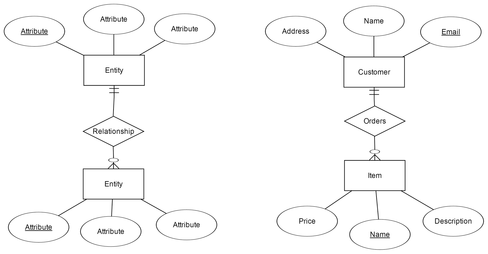

Last modified: Thu Aug 16 2018 22:49:02 GMT+0800 (Malay Peninsula Standard Time)
Chapter 1. Before We Begin
This chapter will explain some of the basics of Ruby on Rails and concept before generating our first Web Application.
1.1 Terminal
By default, all the terminal window that you open should have your application at your root directory. Figure 1.1.1 shows the root directory of my Web Application in Windows OS while Figure 1.1.2 shows the root directory of my Web Application in Ubuntu Linux.
Figure 1.1.1: Root directory of my Web Application in Windows OS.
Figure 1.1.2: Root directory of my Web Application in Ubuntu Linux OS.
All the examples in the terminal will be shown on Windows OS. If you are using Ubuntu Linux, I assume you know how to navigate in terminal window.
If you are not in the root directory of your Web Application, follow the instruction below to get to the root directory of your Web Application. Figure 1.1.1 shows the root of my Web Application is located at C:\Ruby22-x64\code\MyApp. However, in Figure 1.1.3, I am currently at Ruby22-x64 directory, a few level above.
Figure 1.1.3: Ruby22-x64 directory, a few level above
Assume that you have no clue what is in the directory, use the command ls to list all the files and folder in the directory for Ubuntu Linux user or dir /p for WIndows user. Figure 1.1.4 shows the command dir /p being used in a Windows machine.

Figure 1.1.4: dir /p command in Terminal Window.
To go into a folder, use the command cd YOUR_FOLDER_NAME. Figure 1.1.5 shows the operation of going into a folder named code.

Figure 1.1.5: cd command in Terminal Window.
Use the command cd .. if you would like to go back to the previous level. Figure 1.1.6 shows the operation of going into a folder a level above and the folder is named Ruby22-x64.
Figure 1.1.6: cd .. command in Terminal Window.
Do take note that we always run all Ruby commands, including scaffold, rails server, database migration command, at the root directory of your Web Application.
If you dislike the Command Line Interface (CLI), you can always choose to open a terminal windows that has your application as the root directory. Go to the application folder of your application and hold Shift + Right Click at the blank area. You will see the option Open command window here. Click it and you will see a terminal window that has the root directory of your Web Application. Figure 1.1.7 shows the operation.

Figure 1.1.7: Open a Terminal Window in Windows using Shift + Right Click.
Now, a terminal window, as shown in Figure 1.1.8, is opened and has the root directory of your Web Application.
Figure 1.1.8: Terminal Window with Root Directory of my Web Application
1.2 Model, View, Controller
Model, View, Controller (MVC) is a design pattern and was developed in 1979 by Trygve Reenskaug (Smalltalk). It split an application into three distinct parts, Model, View, and Controller.
Model
- Contains data for the application and usually linked to a database.
- No knowledge of user interfaces.
View
- Generates the user interface.
- Does not do any processing.
- Views work is completed once the data is displayed to the user.
- Views can access the same model for at the same time.
Controller
- Receive events from the view.
- Interact with the model.
- Fetch and display the appropriate view to the user.
Figure 1.3.1 shows the interaction between Model, View, and Controller. A user interacts with the controller via buttons and input text fields in the view. The command that user inputs may notify the controller to modify the view or read and modify the model. A user will never interact with the model directly.
Figure 1.3.1: MVC Diagram
1.3 Text Editor
If you are still using a Notepad (or Notepad++) to code, you should switch to a more advanced code editor. The common code editor that programmers use is Sublime Text. However, I prefer Visual Studio Code because it has a lot of extensions and completely open source. Of course, both Sublime Text and Visual Studio Code are completely free.
Do not that Visual Studio Code is not the same as Visual Studio. Visual Studio Code is a text Editor while Visual Studio is an IDE.
Visual Studio Code, as shown in Figure 1.3.1, has some wonderful feature such as
- able to search text within the project
- you can push your code directly to Github by using the combination key of
Ctrl + Enter - built in Command Prompt; Easily open or close with
Ctrl +` - able to start a Rails server and debug (extension required)
Figure 1.3.1: Interface of Visual Studio Code
1.4 Relational Database Basics
Before we begin the actual part of Database, we should first learn the “grammar” for Database. Figure 1.4.1 shows two standalone in Entity Relationship (also known as ER) Diagrams, one on the left and one on the right. Each of the ER diagrams contains two Entities and each entity contains three attributes.
The ER Diagram on the right shows that
Customerentity contains three attributes:address,name, andemail.Itementity contains three attributes:price,name, anddescription.- The Primary Key of
Customerentity isEmail(underlined = Primary Key, also known asPK). - The Primary Key of
Itementity isName(underlined = Primary Key, also known asPK). - Each customer orders zero to many Items (zero-to-many relationship).
- Each of the items belong to one Customer (one-to-one relationship).
Figure 1.4.1: Sample ER Diagram
If you think the information above is too much for you, you can choose to skip to the next section. However, if you would like to learn more about ER Diagram, please read more at tutorialspoint. Figure 1.4.1 shows a very basic ER Diagram. In order to design an efficient website, part of it is based on a database that enables to store, retrieve and analyze data efficiently. Nevertheless, the first step of designing a good Database is to draw ER Diagram correctly.
After an ER Diagram is created, map it into Relational Schema. Figure 1.4.2 shows a Relational Schema of the database on the right above. If you would like to learn more about how to map the ER Diagram into Relational schema, head to this website.
The Relational Schema in Figure 1.4.2 shows that
- There are two tables:
ItemandCustomer - The primary key of
Itemtable isName(underlined = Primary Key, also known asPK) - The primary key of
Customertable isName(underlined = Primary Key, also known asPK) - The foreign key of the
Itemtable isEmail(FK= Foreign Key)

Figure 1.4.2: Sample Relational Schema
Once a Relational Schema is generated, we can start to build our Database. To make everything simple, we can always choose choose to use Rail’s scaffolding command to create a database for your website. However, you are advised to create an ER Diagram and Relational Schema so you can normalize them. The recommended normalization form is always 3NF (read about normalization to get more information). You should never go beyond 3NF. However, there is always an exception. You may have 2NF database that have better performance compared to a database that derived to 3NF.
1.5 Database Manager Basics
A database manager is a tool that we use to allow us to see the data in our database. The database manager is based on the database management system that you are using. In Ruby on Rails, by default, the application will use SQLite as the default database system. However, when the application is pushed to cloud, PostgreSQL will be used as the database system.
SQLiteStudio, as shown in Figure 1.5.1 is database manager that SQLite use. It is a great tool to investigate our data when we are developing locally in our machine. Figure 1.5.1 shows the name of parts shown in a database manager.
Figure 1.5.1: SQLiteStudio Database Manager
To view the database table in SQLiteStudio, we have to add our database file to the Database Manager. Figure 1.5.2 shows the steps to add the file.
Figure 1.5.2: Add your database to SQLiteStudio
After successfully adding your database to SQLiteStudio, follow the operation shown in Figure 1.5.3 to navigate to the Posts table that we have in database.
Figure 1.5.3: Database table in SQLiteStudio
From Figure 1.5.3, we can see that there are 5 attributes in the Posts table. They are id, title, contents, created_at, and updated_at. The table is empty as we have not created or inserted any new values yet.
1.6 Ruby Gems
A Ruby Gem is a package manager for Ruby programming language that has a standard format for distributing Ruby program and libraries. The good thing about Ruby on Rails is you don’t really have to code a feature from zero. There is always a case that someone has already packaged the feature into a Gem that you can download and use it easily.
To find a gem, go to https://rubygems.org/: a search engine for Ruby Gems. Enter something that you would like the search engine to find. Figure 1.6.1 shows that Bootstrap (Bootstrap is the most popular HTML, CSS, and JS framework for developing responsive, mobile first projects on the web) Gem is inserted into the search engine.
Figure 1.6.1: Search engine for Ruby Gems.
Figure 1.6.2 shows the result of the search is shown in the screenshot below. There are several Bootstrap Gem and the ideal selection is to go with the one that has the most download. However, It does not mean that it will fit your need. In order to know whether it fits our need, we have to go into the page and read the document in detail.
Figure 1.6.2: Search result
Figure 1.6.3 shows the information about bootstrap-sass Gem, the most downloads Gem from the search result shown in Figure 1.6.2. In the page, we will find quite a lot of information regarding the Gem. On the bottom right of Figure 1.6.3, visit Source Code and Documentation to find out more about the Gem. Do note that some of the Gems will not be compatible with the Ruby or Rails version that you use.
Figure 1.6.3: Bootstrap-sass Gem information
Figure 1.6.4 shows the page that we will redirect to after we visit Source Code’s link.
Figure 1.6.4: Bootstrap-sass’s Github page
Figure 1.6.5 shows the readme file in the Github page. A readme file is where you should always read as it is a documentation that will providing you information on how to integrate the Gem to your program. Read and follow the instruction to install the Gem.
Figure 1.6.5: Bootstrap-sass readme in Github.